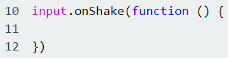
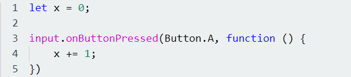

I denne oppgaven så skal vi lage en teller for Micro:Bit som skal telle antall steg du tar når du går. Dette vil da ligne på oppgavene i Del 1 som tok for seg telling i Micro:Bit, men i den oppgaven så skal vi benytte oss av funksjonen som heter "shake". Koden for denne funksjonen ligger under Input biblioteket i Micro:Bit og ser slik ut:
Når dere skal lage telleren, så bør dere benytte dere av variabler som skal holde på antall skritt dere tar, og funksjoner til knappene. Den ene knappen skal vise antall skritt dere har tatt, mens den andre skal nullstille selve telleren. Funksjonen som da skal telle antall steg dere tar. Her kan det da være lønnsomt å benytte seg av += operatoren for å øke tallet på variabelen for antall skritt som dere tar. Pass på at dere øker tallet i variabelen med 1. Vi øker tall i variabler slik:
Da skal dere være klare for å lage en skritteller, hvis dere sitter fast så har dere løsningsforslag nederst i siden. Lykke til!